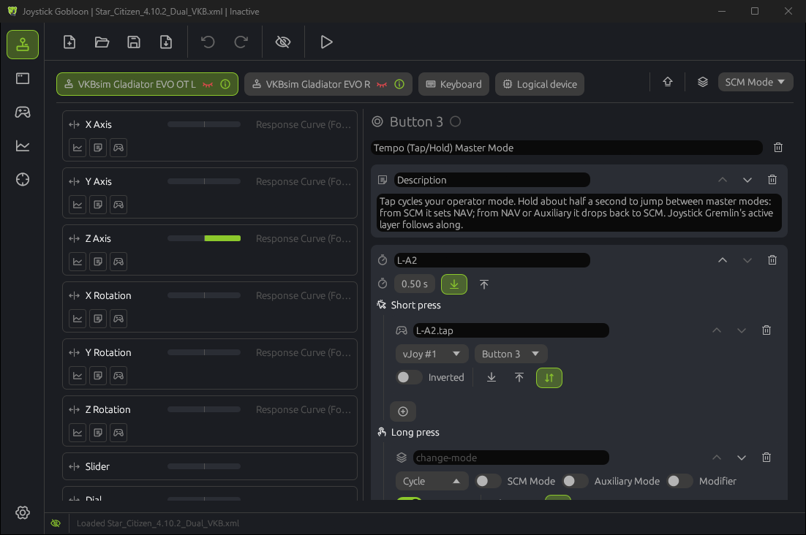

How actions run
Select an input on the Devices page and its actions are on the right. They run from top to bottom every time the input changes, and each one can pass a changed value on to the next one: a response curve before Map to vJoy, for example. The plus button adds an action. It can also link an existing action, so several inputs share it, or copy one.
- When it runs. Button actions have three switches: on press, on release, or both. Both follows the button, so a vJoy button is held exactly as long as yours.
- Containers. Some actions hold other actions: tempo, double tap, condition, split axis and others. Their children are edited inside them.
- Description. The field above the list names the input; the name also shows on the input's card.
